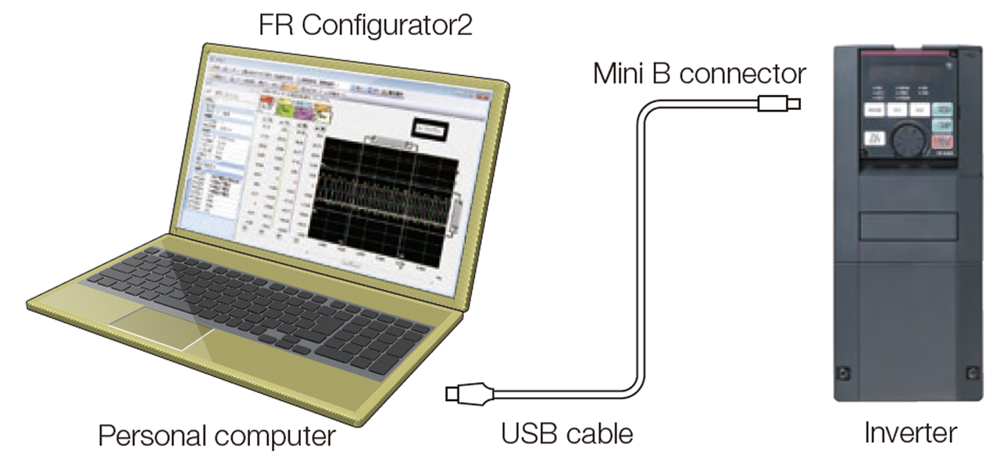
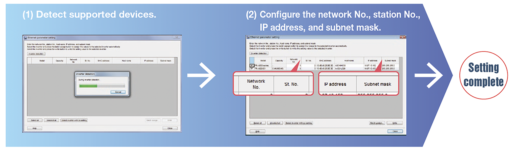
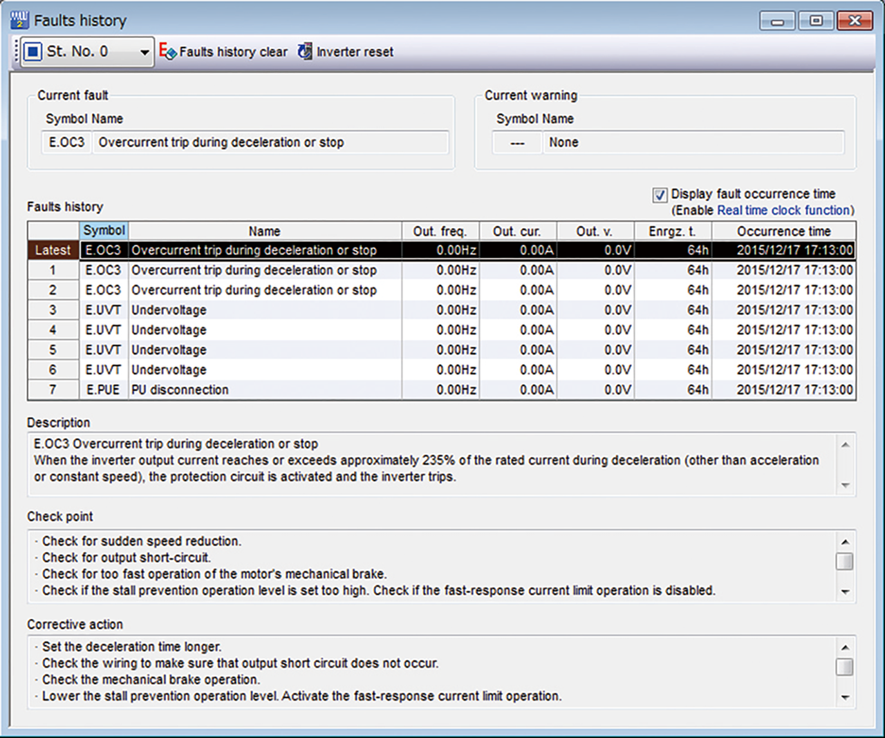
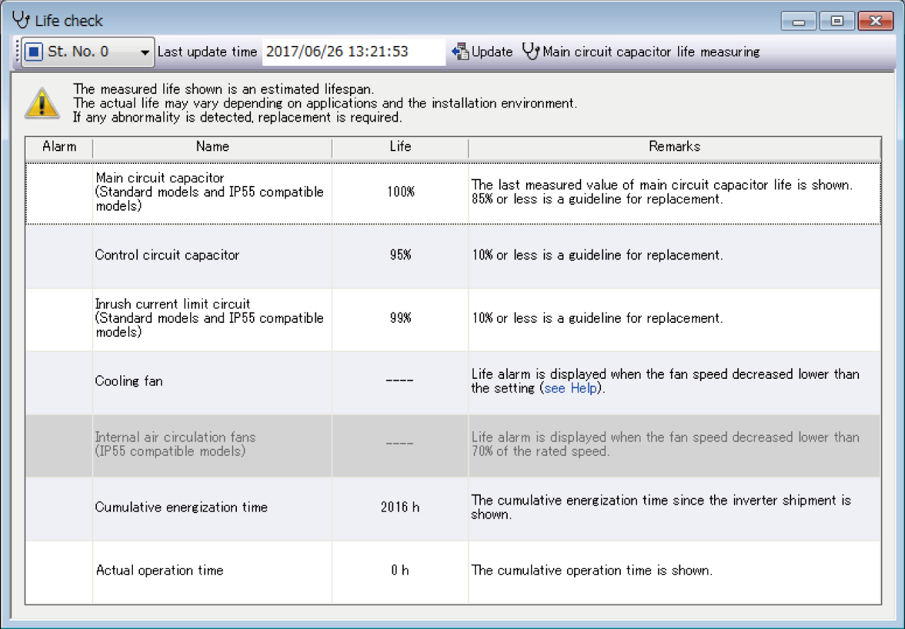

Inverters-FREQROL-A800 Plus Series -FREQROL-A800 Plus for CRANES- Delivering a comfortable inverter operating environment

Delivering a comfortable inverter operating environment
Easy USB cable connection
A USB connector (mini B connector) is provided as standard. Connection with a personal computer can be established easily without using an adapter.

Easy setup FR-A800-E-CRN
Detect the inverter and easily configure network settings using the inverter setup software FR Configurator2.

Easy-to-follow platform facilitates easy maintenance
- Fault history
Fault history and fault occurrence time can be displayed together.
Faults can also be displayed while they are occurring and the inverter can be reset.

- Life diagnosis check
Inverter life information data can be displayed. A warning icon is shown in the part life alarm field of the parts recommended for replacement.
Diagnosis results can be exported to a file with the Diagnosis data output function.
